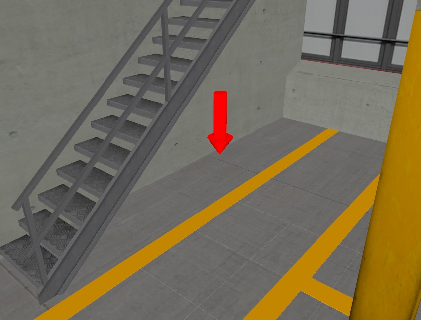
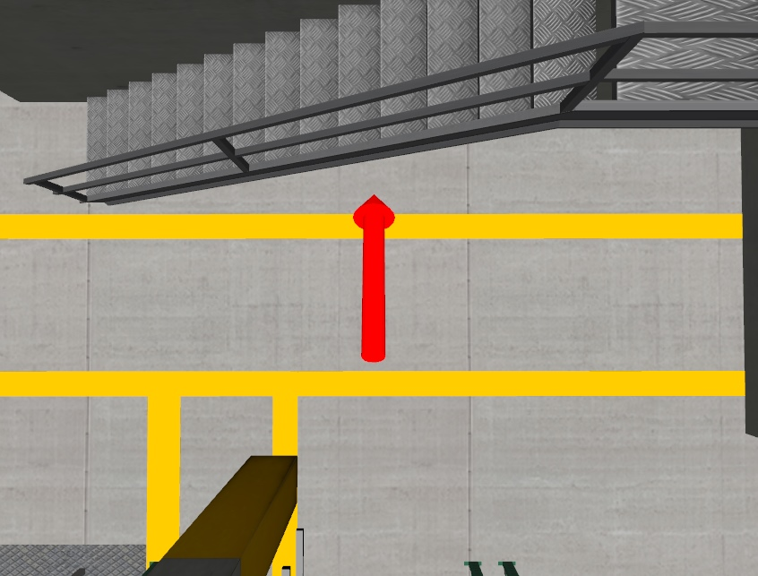
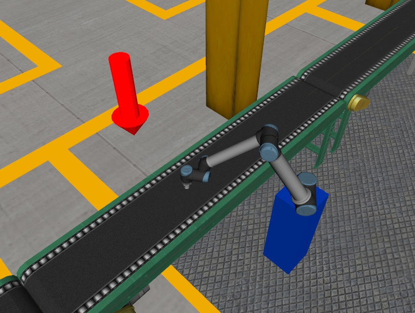
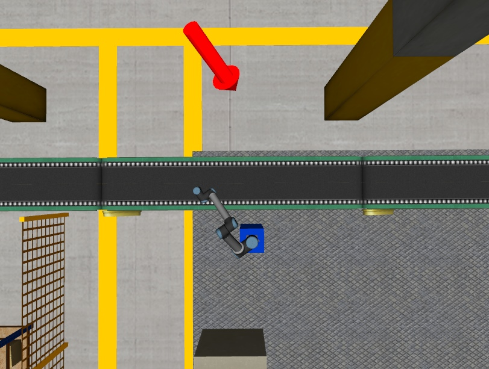
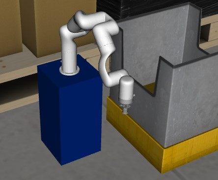
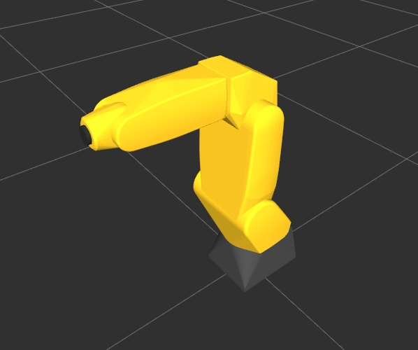

ROS2 URDF Workshop
In deze workshop leer je een aantal technieken om zelf realistische simulatie omgeving te bouwen.
Opdracht 1: Objecten(bol) plaatsen
In deze opdracht ga je een nieuw object toevoegen aan de fabriek: een groene bol.
De bol moet aan de andere kant van de transportband worden geplaatst, onder de trap aan het uiteinde van de fabriek.
Raadpleeg de volgende illustraties. De rode pijl geeft aan waar je de bol moet plaatsen.


Bewerk daartoe het “assignment1.urdf.xacro” bestand in de package urdf_basics van 2_urdf directory.
Voeg je urdf-xml code toe achter de regel:
<!-- Add your solution to assignment 1 here -->
Start assignment 1
ros2 launch urdf_basics visualize_assignment1.launch.py
Opdracht 2: Bak plaatsen
Plaats een nieuwe bin (bak) met de naam bin_2 op de hieronder aangegeven plaats. Gebruik bin_1 als voorbeeld voor de opbouw en verbinding.


Bewerk daartoe het “assignment2.urdf.xacro” bestand in de package urdf_basics van 2_urdf directory. Voeg je urdf-xml code toe achter de regel:
<!-- Add your solution to assignment 2 here -->
Tip: Maak eerst door een xacro:macro (zie regel 28 als voorbeeld) tag een bin_2_ aan en vervolgens met een
Voorbeeld:
Start assignment 2
ros2 launch urdf_basics visualize_assignment2.launch.py
Opdracht 3: Ander type robot plaatsen
In deze opdracht dien je Robot 2 (de uFactory xArm6) te vervangen door een Fanuc LR Mate 200iC robot. Verwijder de xArm6 code volledig uit het bestand, of zet deze in commentaar, zodat alleen de Fanuc LR Mate 200iC robot overblijft.
Website: Fanuc LR Mate-serie
In de onderstaande figuren staat de (al geplaatste) uFactory xArm6 robot aan de linkerkant. Daaronder staat de nieuwe robot, de Fanuc LR Mate 200iC (let op: dit toont alleen de robot, het is geen voorbeeld van de oplossing).


Bewerk daartoe het “assignment3.urdf.xacro” bestand in de package urdf_basics van 2_urdf directory.
Het xacro bestand van de Fanuc LR Mate 200iC robot bevindt zich in de volgende plaats:
Package: fanuc_robots
Directory: urdf
Bestandsnaam: lrmate200ic.urdf.xacro
Voeg je urdf-xml code toe achter de regel:
<!-- Update the below block for assignment 3 here -->
Start assignment 3
ros2 launch urdf_basics visualize_assignment3.launch.py
Opdracht 4: Fout opsporen in URDF/XACRO bestand
In deze opdracht leer je een fout in een urdf- of xacro-bestand te zoeken en op te lossen.
Start assignment 4
ros2 launch urdf_basics visualize_assignment4.launch.py
Je zult zien dat er een foutmelding optreedt. Je kunt de oorzaak van de fout op sporen door de volgende twee stappen:
xacro-bestand omzetten naar een urdf-bestand
Let op: Dit hoeft niet te gebeuren als je al een urdf-bestand hebt.
Met het commando “check_urdf” een controlle op het urdf-bestand uitvoeren
(Het commando “check_urdf” controleert het urdf-bestand op syntaxisfouten en structurele problemen, zoals ontbrekende links, joints, of ongeldige waarden.)
Zorg dat je in de juiste directory bent:
cd ~/ros2_industrial_ws/src/ROS2_industrial/2_urdf/urdf_basics/urdf
Met onderstaand commando kun je een .xacro bestand omzetten naar een .urdf bestand en vervolgens controleren op fouten. Het omzetten naar een .urdf bestand is nodig omdat sommige tools, zoals check_urdf, alleen met het standaard URDF-formaat werken en zo kun je gemakkelijker fouten opsporen. Met onderstaand commado kun je een .xacro bestand omzetten naar een .urdf bestand en vervolgens controleren op fouten.
xacro assignment4.urdf.xacro > assignment4.urdf
Controlleer het urdf-bestand op fouten met het commando:
check_urdf assignment4.urdf
De foutmelding die je krijgt, geeft een aanwijzing over de oorzaak van de fout. Zoek de fout in het “assignment4.urdf.xacro” bestand en los deze op.
Veelvoorkomende fouten zijn bijvoorbeeld ontbrekende tags (zoals of
Let op: Het gegenereerde urdf-bestand hoeft niet aangepast te worden, alleen het xacro-bestand. Let op: Het gegenereerde urdf-bestand hoeft niet aangepast te worden, alleen het xacro-bestand.